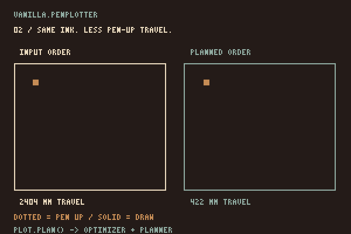
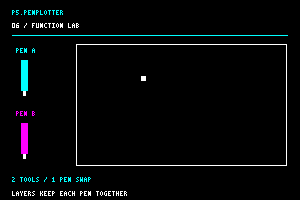
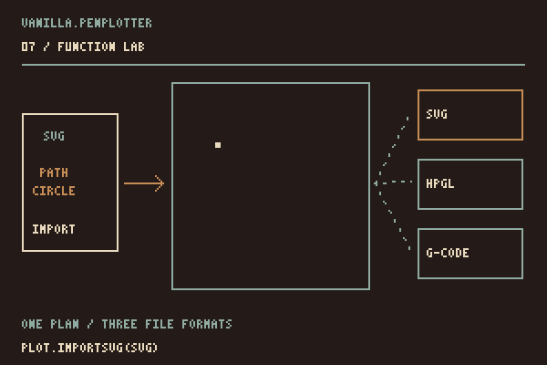

Guide
Install the adapter, record shapes, then preview the planned route.
This guide uses current source. Newer aliases and bed preview helpers are not all present in the latest tagged releases.
1. Load p5.js
<script src="https://cdn.jsdelivr.net/npm/p5@2.2.2/lib/p5.js"></script>
<script type="module" src="sketch.js"></script>2. Install the adapter
import { PlotterEngine } from "https://seb-prjcts-be.github.io/vanilla.penplotter/vanilla.penplotter.js";
import { installP5Penplotter } from "https://seb-prjcts-be.github.io/p5.penplotter/p5.penplotter.js";
installP5Penplotter(p5, PlotterEngine);Both URLs serve the latest main. To pin a version, load both libraries from jsDelivr on a tag, for example https://cdn.jsdelivr.net/gh/seb-prjcts-be/vanilla.penplotter@v0.3.1/vanilla.penplotter.js.
3. Global mode
A module creates no globals, so function setup() inside a module sketch.js is never seen by p5. For global mode, keep the imports in index.html and make sketch.js a plain script:
<script src="https://cdn.jsdelivr.net/npm/p5@2.2.2/lib/p5.js"></script>
<script type="module">
import { PlotterEngine } from "https://seb-prjcts-be.github.io/vanilla.penplotter/vanilla.penplotter.js";
import { installP5Penplotter } from "https://seb-prjcts-be.github.io/p5.penplotter/p5.penplotter.js";
installP5Penplotter(p5, PlotterEngine);
</script>
<script src="sketch.js"></script>let plot;
function setup() {
createCanvas(800, 800);
plot = createPlotterEngine();
plot.line(40, 40, 760, 760);
drawRoute(plot.plan());
}The module runs after the page is read and before load, when p5 starts the sketch. All four wirings, with the timeline behind them, are in Setup.
4. Instance mode
new p5(function sketch(p) {
p.setup = function setup() {
p.createCanvas(800, 800);
const plot = p.createPlotterEngine();
plot.circle(400, 400, 180);
p.drawRoute(plot.plan());
};
});5. Sampling a wave
Sample a sine wave inside a regular loop and pass plain point objects to the plotter.
const points = [];
for (let x = 40; x <= 760; x += 4) {
points.push({
x,
y: 400 + 80 * Math.sin(x * 0.04)
});
}
plot.polyline(points);
80 above to 20. For a different use of the same idea, open the wave field and press R for another seed.6. Straight to the pen
Hand the core's driver to the adapter. Every supported shape call then draws on the canvas and is remembered for the plotter; plot.go() sends it, no SVG in between. Write it where the drawing is finished; the status line then asks you to check the machine and click the drawing, and that click starts the pen. A second click stops it. Use Chrome or Edge, and park the carriage in the home corner first.
import * as Ebb from "../vanilla.penplotter/src/driver/ebb.js";
installP5Penplotter(p5, PlotterEngine, { driver: Ebb });
let plot;
function setup() {
createCanvas(400, 250);
plot = createPlot({ x: 80, y: 150, width: 80 }); // mm on the bed
noLoop();
}
function draw() {
background(255); // screen only
plot.clear();
plot.rect(10, 10, 380, 230);
plot.go(); // ready: click the drawing to plot, click again to stop
}Tested on one machine so far: an iDraw HSE / A2 with EBB firmware 3.0.2.

7. Shapes and fills
plot.… has these 2D primitives, with the same arguments: point, line, circle, ellipse, arc, rect, square, triangle, quad, plus polyline and polygon, which take [x, y] pairs or { x, y } objects. Angles follow angleMode(). A point becomes a quarter-millimetre dash, because a pen cannot dot.
plot.square(30, 10, 40);
plot.triangle(80, 50, 120, 10, 160, 50);
plot.arc(330, 30, 40, 40, 0, HALF_PI, PIE);
plot.polygon([[0, 0], [40, 0], [40, 40]]);
Fills come from the core and are drawn back on the canvas, so screen and paper show the same hatching. Spacing is in millimetres on the bed.
let square = [[20, 80], [120, 80], [120, 180], [20, 180]];
plot.hatch(square, 3, PI / 4); // spacing in mm, angle
plot.crossHatch(square, 4); // second direction at right angles
plot.stipple(square, 150, 3); // count, seed

line() draws on the screen. plot.line() also records the line for the pen. background() changes the screen; plot.clear() clears the recorded drawing.
plot.point(): the recorded point is a 0.24 mm dash. A row of points becomes a texture, even though every mark is a very short line.8. Continue in vanilla.penplotter
The returned object is the complete core engine. Use its layers, tools, hatch fills, optimizer, planner, statistics and exports without adapter-specific alternatives. With createPlot(), that engine is plot.engine.

plot.plan({ strategy: "drawn" }) with plot.plan({ strategy: "nearest" }). Keep the drawn order when watching the picture appear is part of the work.
plot.engine.pen() and plot.engine.layer(), and set the p5 screen colour separately with stroke(). The physical pen change is yours to make.
plot.engine.importSVG() reads supported SVG geometry; the engine can then export SVG, HPGL or G-code. Try the engine’s SVG to pen page with a simple drawing of your own.9. Copy-paste starters
Three plain global-mode sketches. Wire them up with the index.html from Setup 1; each one writes plot.go() when ready: click the drawing to plot and click again to request a stop.
Rings
let plot;
function setup() {
createCanvas(600, 600);
plot = createPlot({ x: 147, y: 66, width: 300 }); // 300 mm wide, centred on A2
noLoop();
}
function draw() {
background("#ffffff");
noFill();
plot.clear();
for (let d = 40; d <= 560; d += 20) plot.circle(300, 300, d);
plot.go(); // click the drawing to plot
}A wave, twenty times
function draw() {
background("#ffffff");
noFill();
plot.clear();
for (let row = 0; row < 20; row += 1) {
let points = [];
for (let x = 40; x <= 560; x += 4) {
points.push([x, 60 + row * 25 + 10 * Math.sin((x + row * 9) * 0.03)]);
}
plot.polyline(points);
}
}Tone from lines
function draw() {
background("#ffffff");
noFill();
plot.clear();
for (let i = 0; i < 8; i += 1) {
let x = 40 + i * 65;
let cell = [[x, 250], [x + 55, 250], [x + 55, 305], [x, 305]];
plot.hatch(cell, 6 - i * 0.65, QUARTER_PI); // spacing in mm on the bed
plot.polygon(cell);
}
}Finished versions of these, and more, are on Examples; what a plotter can do beyond them is on the engine's Possibilities page.